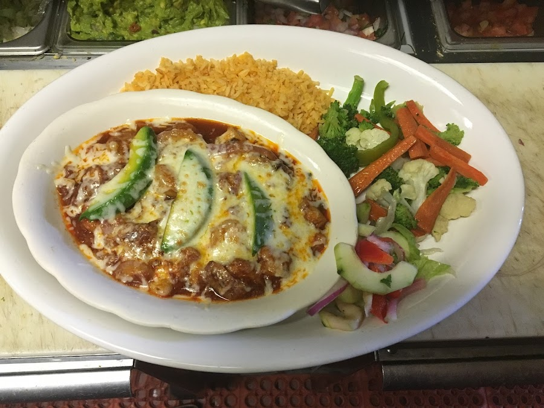
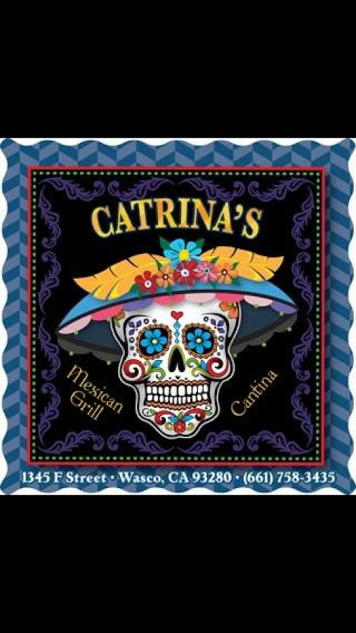
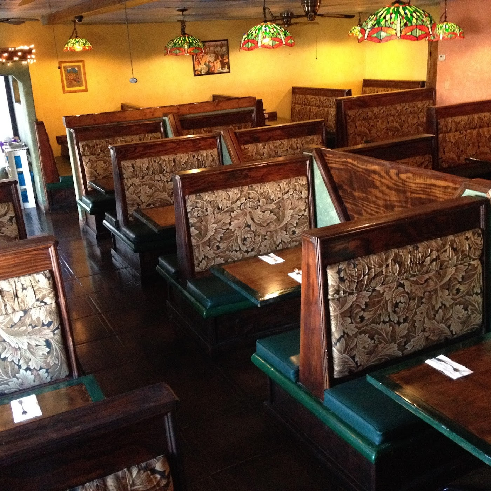

Slow-Simmered
Chile Colorado
Tender beef braised in a deep red chile sauce, blanketed in cheese and served with rice and crisp seasonal vegetables.
Authentic Mexican Kitchen
Flavor worth a second visit — and a third.
Generous plates, made-from-scratch flavor, and a warm, festive room on F Street. Pull up a booth, order a margarita, and stay a while.

Our Table
Named for La Catrina, the elegant icon of Mexico's Día de Muertos, Catrina's pairs honest, home-style cooking with a festive cantina spirit. The salsas are bright, the chile verde and colorado simmer slow, and the portions are built to share.
Folks find us once — often passing through Bakersfield — and come back the next year just to do it again. Friendly faces, clean tables, and a real meal for your money. That's the whole idea.

The Cantina
The bar's lit up nightly — frozen and on the rocks, classic and creative. Grab a stool, order a quesadilla, and let the evening unwind cantina-style.
In Their Words
Great food, excellent service. Authentic Mexican — very flavorful.
Really good food, great service. The ladies were so very nice.
The Chile Verde was very good. We found this place a year ago passing through Bakersfield — liked it then, so we had to revisit it again this year.
Great place to eat! Friendly service, great tasting food, clean facilities — large portions, a great meal for your money.
Find Us
1345 F St, Wasco, CA 93280
(661) 758-3435
| Monday | Closed |
| Tuesday | 3:00 – 8:30 PM |
| Wednesday | 3:00 – 8:30 PM |
| Thursday | 3:00 – 8:30 PM |
| Friday | 3:00 – 8:30 PM |
| Saturday | 3:00 – 8:30 PM |
| Sunday | 11:30 AM – 6:00 PM |